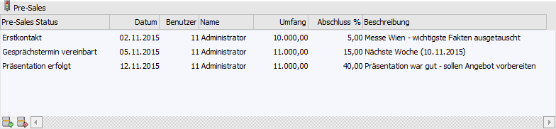
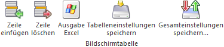

Im Register "Stamm" können die wichtigsten Daten zu einer Verkaufschance erfasst werden.

Ø Nummer
An dieser Stelle erfolgt die Eingabe der Nummer zur Verkaufschance (20stellig alphanumerisch).
Ø Bezeichnung 1 / Bezeichnung 2
An dieser Stelle kann die Bezeichnung bzw. Beschreibung zu diesem Projekt hinterlegt werden (jeweils 50stellig).
Ø Summe Verkaufschance
Hier wird der aktuelle Umfang der Verkaufschance (Pre-Sales-Umfang) angezeigt.
Ø Abschlusswahrscheinlichkeit in %
Hier wird die aktuelle Abschlusswahrscheinlichkeit der Verkaufschance (Pre-Sales-Abschlusswahrscheinlichkeit) angezeigt.
Ø Kunde / Interessent
In diesem Feld wird das Personen- bzw. Interessentenkonto der Verkaufschance hinterlegt.
Ø Verantwortlicher
An dieser Stelle kann der projektverantwortliche Mitarbeiter (WinLine Benutzer) hinterlegt werden.
Ø Vertreter
In das Feld "Vertreter" kann der zuständige WinLine FAKT Vertreter hinterlegt werden.
Ø Gruppe
Über die Gruppe, welche an dieser Stelle hinterlegt wird, können verschiedene Verkaufschancen zusammengefasst werden, wobei in weiterer Folge die Auswertung auch nach (Projekt-) Gruppen durchgeführt werden kann.
Ø Beginnt
An dieser Stelle kann das Datum des Beginns der Verkaufschance hinterlegt werden.
Ø Abschluss bis
In dieses Feld wird das Datum vom Ende der Pre-Sales-Phase hinterlegt.
Ø Inaktiv seit
Die gesamte Verkaufschance kann durch Aktivierung der Checkbox "Inaktiv seit" inaktiv gesetzt werden und steht somit für die Projekterfassung nicht mehr zur Verfügung
Tabelle "Pre-Sales"
In der Tabelle "Pre-Sales" werden alle bisher erfassten Pre-Sales-Stati der Verkaufschance aufgelistet und können direkt editiert oder ergänzt werden.

Ø Pre-Sales Status
In dieser Spalte wird der Text des Pre-Sales-Status dargestellt.
Ø Datum
An dieser Stelle wird das Erfassungsdatum der Pre-Sales-Zeile angezeigt.
Ø Benutzer
In der Spalte "Benutzer" wird der Benutzer der Erfassung angezeigt.
Ø Name
Hier wird der Name des Benutzers in Klarschrift angezeigt.
Ø Umfang
Pro Pre-Sales-Erfassung kann ein Projektumfang angegeben werden, welcher hier ausgewiesen wird.
Ø Abschluss %
In dieser Spalte wird die erfasste Abschlusswahrscheinlichkeit dargestellt.
Ø Beschreibung
Pro Pre-Sales-Erfassung kann eine Detailbeschreibung angegeben werden, welche hier ausgewiesen wird.
Tabellenbuttons

Ø Zeile einfügen
Durch Anwahl des Buttons "Zeile einfügen" kann eine neue Pre-Sales-Zeile eingefügt werden.
Ø Zeile löschen
Mit Hilfe der Buttons "Zeile löschen" kann die markierte Pre-Sales-Zeile entfernt werden.
Ø Ausgabe Excel
Durch Anwahl des Buttons "Ausgabe Excel" wird der Inhalt der Tabelle nach Microsoft Excel übergeben.
Ø Tabelleneinstellungen speichern
Die Spalten einer Tabelle können grundsätzlich an beliebige Positionen verschoben, bzw. in der Breite entsprechend angepasst werden. Durch Anwahl des Buttons "Tabelleneinstellungen speichern" werden die Einstellungen benutzerspezifisch gespeichert und bei dem nächsten Aufruf des Programmpunktes wieder vorgeschlagen.
Ø Gesamteinstellungen speichern
Im Gegensatz zu "Tabelleneinstellungen speichern" können mit "Gesamteinstellungen speichern" mehrere Tabellenaufbauten gespeichert und nach Wunsch geladen werden. Zusätzlich werden Sonderfunktionen der Tabelle (z.B. "Spalte gruppieren") ebenfalls bei der Speicherung bedacht.